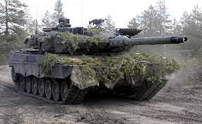
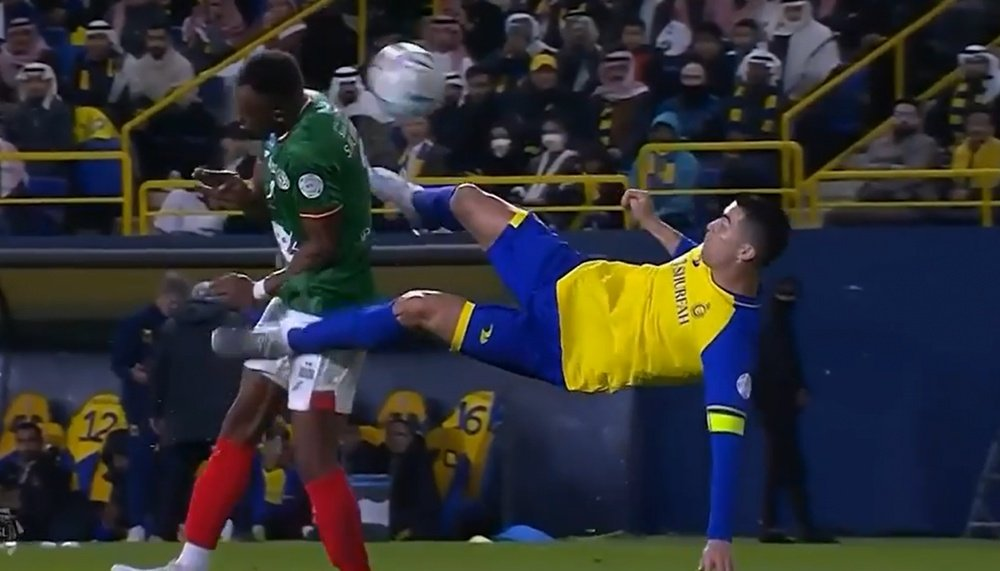

Historias recientes

Moscú acusa a Occidente
Al menos 11 muertos en un ataque a Ucrania con 55 misiles y 24 drones tras el acuerdo de los aliados para suministrar carros de combate a Ucrania | Alemania afirma que entregará los tanques Leopard 2 al ejército ucranio

Chilena de Cristiano en debut
Cristiano Ronaldo fue titular en su debut en la liga de Arabia Saudí con el Al Nassr. No marcó ningún gol pero intentó esta chilena en el minuto 74 de partido.

Dani Alves contrata al abogado de Messi
Cristóbal Martell, que también defendió a Pujol Ferrusola en su momento, se suma a la defensa del futbolista brasileño.